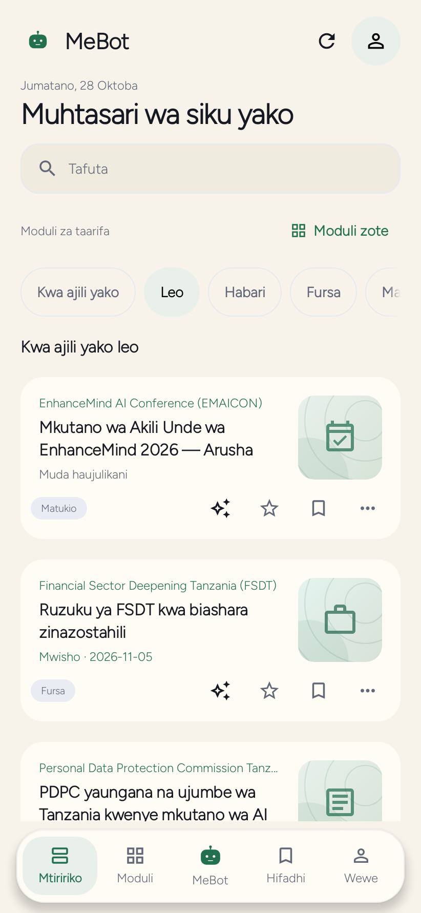
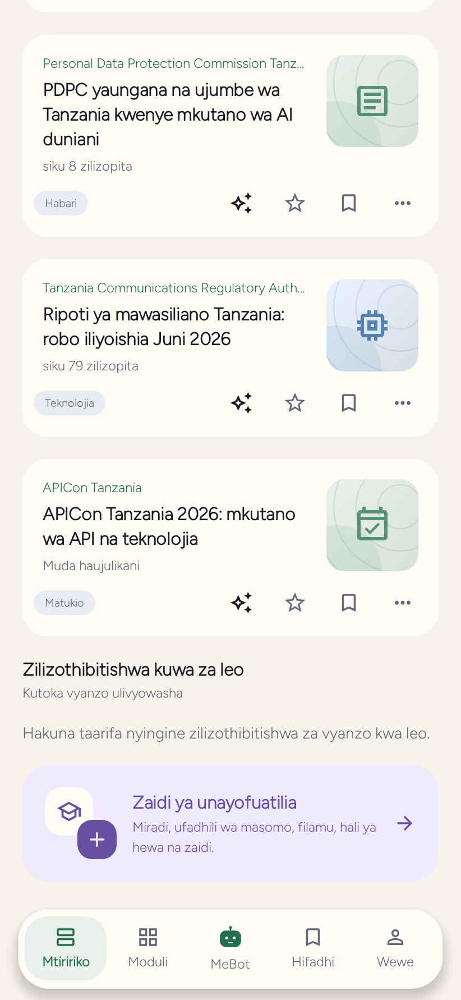

MeBot 0.9.8 preview
More to read. A clearer next step.
Open Suggestions when you want another angle. Explicit generation prepares five distinct questions with your connected AI. Send asks the selected question; the pencil lets you edit first. Opening or closing the sheet never sends a question. Without AI, questions are unavailable, while public reading and saved items remain usable.
Original Reads and a useful Today
Original Reads are clearly labelled AI-authored, with Created dates rather than publisher dates. Read the complete sections, inspect evidence, and explore optional further reading separately. Today keeps your personal selection distinct from verified source-day stories; an undated source is not relabelled as published today.
The screenshots below show Today, not a completed Original Read. Long-form Original Read images are omitted until suitable content is reviewed.




Not yet a public download
The source is under review. This page does not offer a signed preview APK or claim physical-device acceptance. The earlier published APK has a different experience.
Source review →